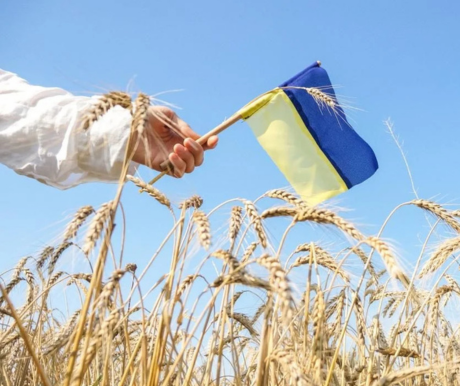

Те, що ви не знали про обласні центри України
Півненні міста
Під Херсоном розташована величезна мережа катакомб, звідки раніше добували глину для побудови старої частини міста.
В Миколаєві розташована одна з найстаріших в Європі морських обсерваторій. Вона є одним з найкрасивіших будівель в місті і найвищою точкою Миколаєва.
В Одесі є кілька будинків, побудованих під кутом в 45 градусів. Якщо подивитися на них збоку, то здається, що ці будинки плоскі.
В Сімферополі починається найдовший у світі тролейбусний маршрут. Закінчується він в Ялті. Його довжина - 86 кілометрів.
В Запоріжжі був вироблений один з перших в СРСР тракторів, який був подарований Володимиру Леніну. Трактор мав примітивну конструкцію, але на ньому було легко працювати. Називався він "Запорожець", як і відома марка машин.
Кропивницький за свою історію змінив 6 назв. Зараз це єдиний в Україні обласний центр, який названий на честь театрального діяча - творця українського театру Марка Лукича Кропивницького
Північні міста
В Києві знаходиться найглибша станція метро в світі - "Арсенальна". Спуск на станцію на ескалаторі займає більше п'яти хвилин.
Чернігів - одне з найстаріших міст України, історичний центр Лівобережної України та одне з найбільш населених міст Київської Русі.
В Сумах до початку 20 століття жило багато австрійців, чехів, німців, поляків та інших європейців. Вони опинялися в місті як біженці після Першої світової війни, а багатьох з них засилали вглиб Російської Імперії після невдалих повстань.
Житомир виробляє найбільше меду в Україні, а також чверть всього українського морозива.
В Черкасах міг розташовуватися Родень - одне з найзагадковіших міст України, яке існувало у 8 столітті. Його точне розташування невідоме, але є припущення, що він знаходився на Замковій горі в Черкасах.

Західні міста
Ужгород знаходиться ближче до Варшави, Кишинева і Праги, ніж до Києва.
Івано-Франківськ раніше носив назву Станіславів і був столицею Західно-Української Народної Республіки в 1919 році. Свою сучасну назву отримав у 1962 році на 300-річчя міста.
Львів - найрізноманітніший в Україні релігійний центр. Тут представлені всі конфесії християнства, а також є синагога.
В Вінниці до Другої світової війни третина населення були євреями. Зараз у місті є кілька синагог, єврейські школи, єврейський цвинтар та житловий район Єрусалимка, а також тут відзначають єврейське свято Хануку.
В Луцьку знаходиться найдовший в Європі житловий будинок. Його сумарна довжина - понад 2,5 км, а всього в будинку 120 під'їздів.
Центр Тернопіля прикрашає найбільший в Україні штучний ставок. Його площа становить понад 300 гектарів. На ньому розташований фонтан і ходять теплоходи, а взимку тут влаштовують хокейні змагання.
Хмельницький отримав назву на честь гетьмана Богдана Хмельницького і в ньому є аж 4 пам'ятники полководцю. Однак сам гетьман ніколи не відвідував це місто.
В Чернівцях щодня о 12:00 на міську ратушу піднімається трубач в національному костюмі і сурмить пісню "Марічка".
В Рівному був знайдений бурштин віком 40 мільйонів років, в якому були виявлені стародавні скорпіони, павуки, мурахи та інші комахи. Цей бурштин утворився в той час, коли територія України була островом, а на місці Польщі було море.
Східні міста
Полтава вважається батьківщиною української розмовної мови. Саме тут народився і жив Іван Котляревський, автор першої поеми українською мовою.
В Луцьку знаходиться найдовший в Європі житловий будинок. Його сумарна довжина - понад 2,5 км, а всього в будинку 120 під'їздів.
У 2012 році в центрі Донецька був встановлений рекорд Гіннеса за наймасштабнішу квадриль (народний танець). У заході взяли участь понад 30 тисяч танцюристів
Харків- одне з найбільш "освічених" міст України. Тут розташовано майже 80 вузів.
В Дніпрі знаходиться одна з найдовших і найбільш мальовничих у світі набережних. Вона простяглася на 23 кілометри.